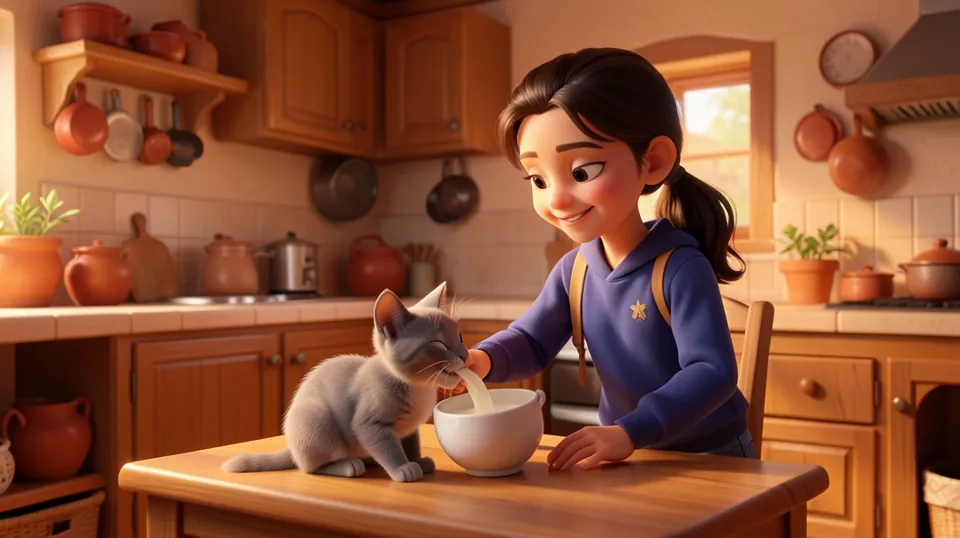
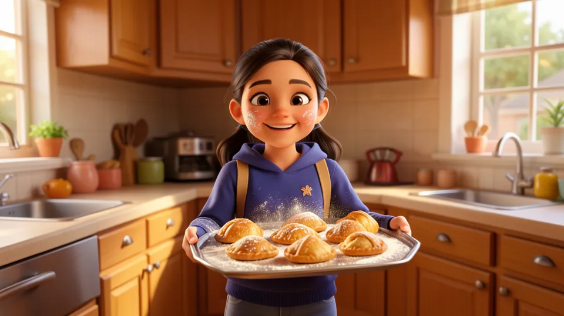
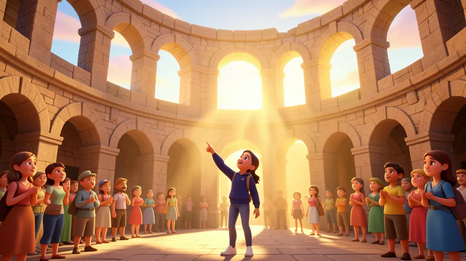

6 cours du programme de 5e avec Plume, la huppe : chaque cours commence par un dessin animé dont tu es l'héroïne, puis des exercices du plus facile au plus difficile, les pièges, un petit texte et un bilan.

2🐱 Le chaton de la médinaLes pronoms compléments : le, la, les, lui, leur, en, y 3⛵ La tempête de DjerbaL'imparfait et le passé simple dans le récit
4🎉 La fête de fin d'annéeL'accord du participe passé
5🏛️ Le guide d'El JemLes propositions subordonnées relatives : qui, que, dont, où 6🌙 Le poème du désertLes figures de style : comparaison, métaphore, personnification, hyperbole